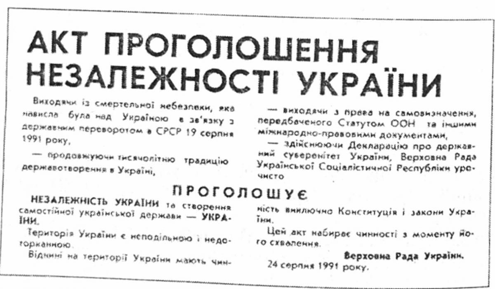

В історії України є події, які мають надзвичайне значення.
Однією з таких подій є здобуття незалежності 1991 року.
24 серпня Україна святкуватиме 30-ту річницю проголошення незалежності.
У 1991 році на позачерговому засіданні Верховна Рада УРСР ухвалила Акт проголошення незалежності України, зазначивши у ньому, що продовжується тисячолітня традиція державотворення в Україні, яка має право на самовизначення,
передбаченого Статутом ООН та іншими міжнародно-правовими документами.
Першого грудня 1991 року на Всеукраїнському референдумі українці підтвердили своє прагнення жити в незалежній державі, зробивши її незворотнім фактом історії.
Першими із понад 130 країн світу Українську державу визнали Польща, Канада, Латвія і Литва. Протягом першого року існування незалежної України, її державну самостійність визнали більше 130 країн, а на початку 2001 р. підтримувала дипломатичні відносини із 153 країнами світу.
